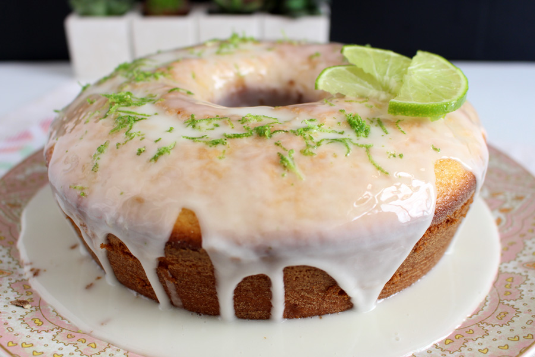

Bolo de Limão-Siciliano e Gengibre
Ingredientes
Calda De Gengibre
- 1/2 xícara (210 g) de açúcar de confeiteiro
- 1/4 xícara (150 g) de gengibre fresco picado
- 1/4 xícara (300 ml) de água
Bolo
- 1/4 xícara (225 g) de açúcar
- 3/4 de xícara (150 g) de manteiga sem sal, à temperatura ambiente
- 3 ovos grandes (210 g), ligeiramente batidos
- 1/3 xícara (180 g) de farinha de trigo
- 1 colher (chá) (2 g) de gengibre em pó
- 1 colher (chá) (4 g) de fermento em pó químico
- 1/8 de colher (chá) (1 g) de sal
- 2 colheres (chá) (10 g) de gengibre fresco finamente ralado
- 2/3 colheres (sopa) (16 g) de raspas de casca de limão-siciliano
- 1/2 xícara (120 ml) de suco de limão-siciliano
- 2 colheres (sopa) (30 ml) da calda de gengibre
- 1/2 colher (sopa) (7 g) de manteiga sem sal, para untar
- 1/2 colher (sopa) (4 g) de farinha de trigo, para polvilhar
Passo a Passo
Calda De Gengibre
- Numa panela, junte todos os ingredientes e leve para ferver por 10 minutos.
- Coe, espere esfriar e guarde na geladeira por até 1 semana.
Bolo
- Preaqueça o forno a 180°C.
- Na tigela da batedeira, junte 200 g de açúcar e a manteiga e bata, em velocidade média, até obter uma espuma leve.
- Aumente a velocidade e acrescente os ovos, um a um, batendo até tudo estar incorporado.
- Peneire a farinha, o gengibre em pó, o fermento e o sal sobre a mistura da tigela e incorpore delicadamente com uma espátula.
- Em seguida, acrescente o gengibre fresco, as raspas de limão e metade do suco de limão e misture.
- Transfira a massa para a fôrma untada com manteiga e polvilhada com farinha de trigo e leve ao forno por 1 hora, até o bolo ficar bem dourado.
- Enfie uma faca no centro do bolo. Se ela sair limpinha, o bolo estará pronto.
- Numa tigela, misture o suco de limão e o açúcar restantes com a calda de gengibre
- Cubra o bolo ainda quente e na fôrma com essa mistura.
- Deixe o bolo esfriar na própria fôrma antes de servir.
Utensílios
Fôrma de bolo inglês de 20 x 10 cm
Galeria

Visite a Tanamesa.